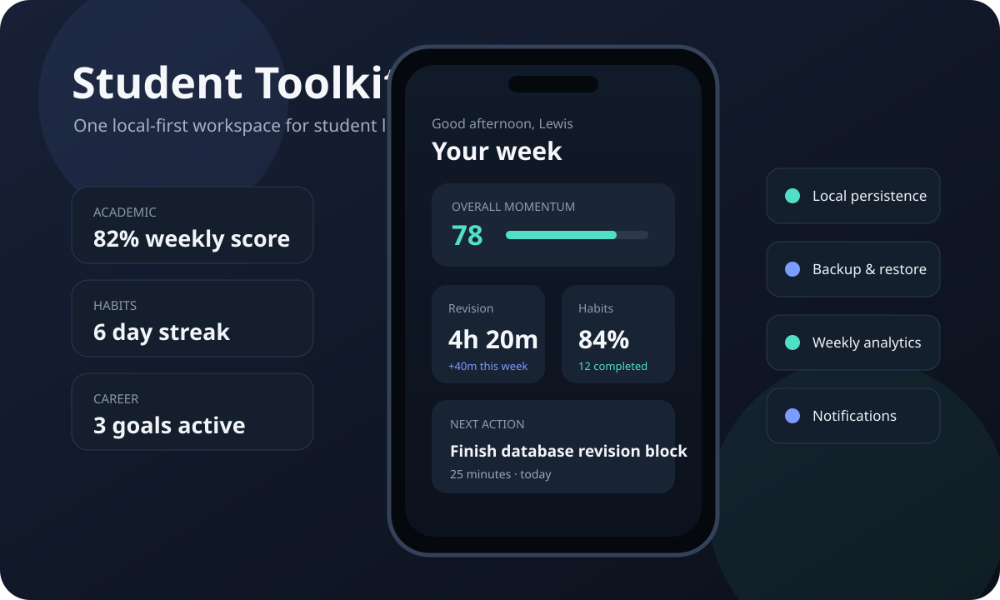

Student Toolkit OS
A React Native / Expo productivity application connecting academic planning, habits, fitness, career progress and personal goals through shared state, on-device persistence and a consistent multi-screen mobile experience.

The challenge
Students often use separate apps for revision, habits, fitness, CV planning and personal goals. I wanted to explore whether those workflows could feel like one coherent product while remaining local-first and useful without a backend account.
The main challenge was shared state and product cohesion: multiple feature areas needed to feel connected without turning the codebase or navigation into a collection of isolated mini-apps.
What I built
- Onboarding and local profile setup.
- A dashboard summarising academic, fitness, hustle and career progress.
- Revision, gym, side-income and CV planning workflows.
- Habit completion history, weighting and streak logic.
- Weekly review and analytics views.
- AsyncStorage persistence across app restarts.
- Local backup, restore, export and notification flows.
Engineering decisions
- Local-first by design: core functionality does not depend on a hosted backend or user account.
- Shared application state: related screens consume the same persisted data rather than duplicating state per feature.
- Feature consistency: planners and analytics follow common interaction patterns so the app feels like one product.
- Recoverability: restore input is validated before replacing local data, and failed restores use rollback protection so bad backup files do not silently wipe the existing app state.
Verification
The public demo repository runs ESLint and TypeScript type checking through GitHub Actions on pushes and pull requests. That provides a repeatable quality gate for the current portfolio build, while the documentation is explicit that full mobile end-to-end automation remains a future upgrade.
Architecture
What this demonstrates
This project demonstrates mobile product thinking, navigation across a broad feature set, local persistence, recoverability and the ability to design shared state around a real user experience rather than a single isolated screen.